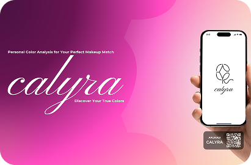

CALYRA
Rule-based recommendation system that matches personal color analysis to the right makeup shades.

- Rule
- ApproachExpert-system inference
- Ontology
- Knowledge ModelModeled in Protégé
- Flutter
- Mobile ClientCross-platform UI
- Laravel
- Inference APIREST backend
Challenge
The Problem
Choosing makeup that suits your skin tone and undertone is mostly trial and error. Personal color knowledge lives with experts, so most people guess and end up with shades that do not match.
Goal: turn expert color knowledge into something an app can apply consistently.
Solution
The Approach
Calyra encodes personal color logic as an ontology and a set of rules. A Laravel API runs the inference, and a Flutter app presents the recommendation in a clear, visual way.
Outcome: consistent, explainable recommendations instead of guesswork.
System Architecture
Core Implementation
Ontology Modeling
Designed classes, properties, and rules for color types in Protégé.
Flutter Mobile Client
Built the screens, navigation, and result presentation.
Laravel Inference API
Exposed the rule engine through REST endpoints.
Color Extraction
Processed image input into values the rules can use.
Process
- 01
Research
Study personal color theory and makeup matching.
- 02
Define
Turn expert knowledge into ontology classes and rules.
- 03
Design
Plan the flow and prototype the screens in Figma.
- 04
Build
Implement the ontology, Laravel API, and Flutter app.
- 05
Test
Check rule accuracy against sample cases and refine.
Application Screens


Next project